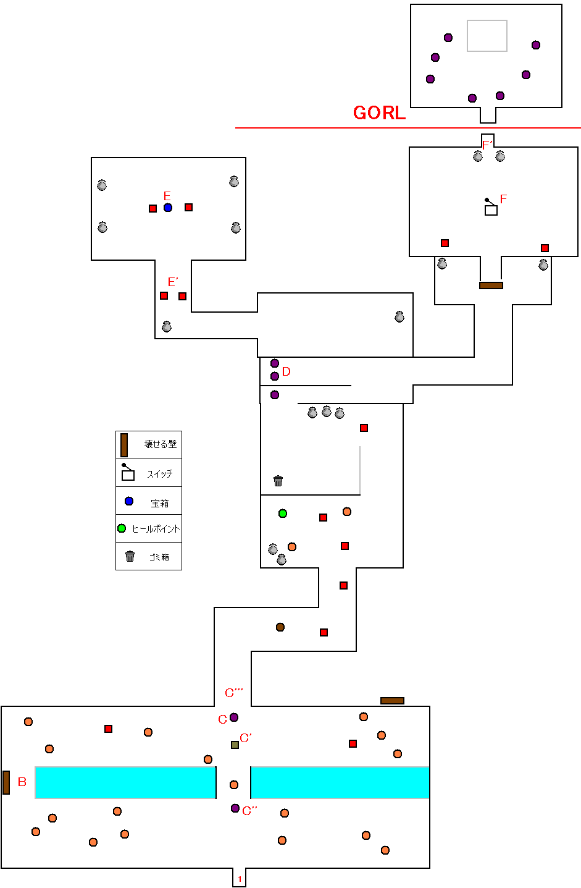
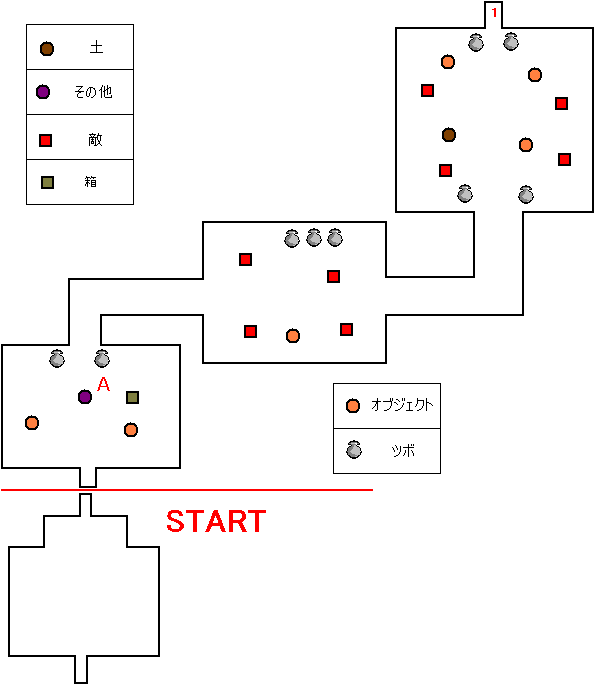
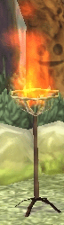
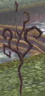
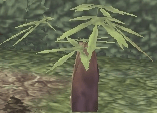

GURUMIN
| 概要 | 情報 | ボス戦 |
| 攻略チャート | ステージ一覧 | 敵キャラ一覧 |
| アイテム一覧 | 行動パターン | GURUMIN 攻略へ |
| ステージ選択へ |
ラディスの森
にぎやか森の細道
|

|
||||
|
B
|
B地点の壊せる壁は非常にわかりづらい位置にあります。 また、足場が狭いので水の中に落ちないように注意して ください。 | |||
|
C
 
|
C地点の赤く発光する床に乗ると、C'地点に箱が現れます。
この箱を写真のような床があるC''地点へ移動させることで
C'''地点の扉が開きます。 一度、扉が開いた後にC地点に乗ると、扉が閉まり箱が元の 位置に戻ってしまうので注意しましょう。 |
|||
|
D
|
E地点の宝箱を取るには、D地点でターゲットアタックをしな ければなりません。しかし、ここにるぽむはメダルの色とは 関係ないので、全て倒す必要はありません。 | |||
|
E
|
E地点の宝箱を開くと、E'地点にファントムが2体現れます。 両方とも広範囲に効果のある攻撃を仕掛けてくるので、注意 してください。 | |||
|
F
|
スイッチFを動かすと、なぜか爆発します。そうすると、同じ
部屋にファントムが2体現れます。この2体を倒さないと、奥へ
続く扉が開きません。 ちなみに、爆発したときにダメージは受けないので安心してく ださい。 |
|||
|

|
|
|
A
|
写真の円の部分に箱を移動させることで、閉じている 扉が開きます。 |
|    | これらは破壊できます。メダルの色に変化をもたらすかどうかは よくわかりません。 |
| ステージ選択へ |
| 概要 | 情報 | ボス戦 |
| 攻略チャート | ステージ一覧 | 敵キャラ一覧 |
| アイテム一覧 | 行動パターン | GURUMIN 攻略へ |
ぐるみん
GURUMIN
| 目次へ戻る | ページの上部へ |